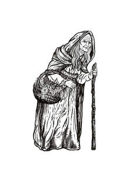

Trade Mark Journal No.2025/017 25 April 2025
UK00004186463 9 April 2025 (4,10,14,16,19,20,21,25,28,30,32,35,41,43)

- Class 4
- Candles and wicks for lighting; candles; scented candles; fragranced candles.
- Class 10
- Crystals for therapeutic purposes.
- Class 14
- Jewellery; precious and semi-precious stones; gemstones; crystals; ornaments [jewellery]; imitation jewellery ornaments; ornaments and figurines made of precious or semi-precious metal or stones or imitations thereof; keyrings.
- Class 16
- Printed matter; photographs; stationary; books; magazines; postcards; instructional and teaching materials [printed].
- Class 19
- Ornaments made of stone or concrete or substitutes for these; petrified [stone] ornaments.
- Class 20
- Furniture, mirrors, picture frames; containers, not of metal, for storage or transport; ornaments, decorations, figurines and sculptures made of wood, straw, bone, shell, wax, resin, plastics or plaster or substitutes for these.
- Class 21
- Household and kitchen utensils and containers; glassware, porcelain and earthenware; crockery; mugs; tea cups; ornaments and figurines made of crystal, ceramics, glass, china or earthenware.
- Class 25
- Clothing; footwear; headgear.
- Class 28
- Games and playthings; decorations for Christmas trees; toys; dolls; petrified dolls; plush toys and stuffed toys; petrified plush toys and stuffed toys; teddy bears; petrified teddy bears.
- Class 30
- Coffee; tea; confectionery; ices.
- Class 32
- Beers; mineral and aerated waters and other non-alcoholic drinks; fruit drinks and fruit juices.
- Class 35
- Retail services connected with the sale of candles and wicks for lighting, candles, scented candles, fragranced candles, crystals for therapeutic purposes, jewellery, precious and semi-precious stones, gemstones, crystals, ornaments, jewellery, imitation jewellery ornaments, ornaments and figurines made of precious or semi-precious metal or stones or imitations thereof, keyrings, printed matter, photographs, stationary, books, magazines, postcards, instructional and teaching materials, ornaments made of stone or concrete or substitutes for these, petrified ornaments, furniture, mirrors, picture frames, containers for storage or transport, ornaments and decorations and figurines and sculptures made of wood or straw or bone or shell or wax or resin or plastics or plaster or substitutes for these, household and kitchen utensils and containers, glassware, porcelain and earthenware, crockery, mugs, tea cups, ornaments and figurines made of crystal or ceramics or glass or china or earthenware, clothing, footwear, headgear, games and playthings, decorations for Christmas trees, toys, dolls, petrified dolls, plush toys and stuffed toys, petrified plush toys and stuffed toys, teddy bears, petrified teddy bears, food and drink products, coffee, tea, confectionary, ices, beers, mineral and aerated waters and other non-alcoholic drinks, fruit drinks and fruit juices; the provision of the aforementioned retail services via a gift shop; the provision of the aforementioned retail services online.
- Class 41
- Education; providing training; entertainment; sporting and cultural activities; provision of visitor attractions for entertainment, educational or cultural purposes; provision of leisure, entertainment and recreation facilities; amusement park services; theme park services; parks and gardens for recreational purposes; caves for public admission; conducting guided tours of caves for entertainment, educational or cultural purposes; operating wishing wells and petrifying wells as visitor attractions [for entertainment, educational and cultural purposes]; production and presentation of shows, live performances and displays; organisation of competitions, games, quizzes, fun days and audience participation events; arranging and conducting of conferences, exhibitions, seminars, workshops and lectures for cultural, educational or entertainment purposes; museums; museum services; museum exhibitions and presentations; preparation and exhibiting of petrified objects [for entertainment, educational and cultural purposes]; children's adventure playground services; publication of books and texts; publication of educational and teaching materials; information, advisory and consultancy services relating to all of the aforesaid services.
- Class 43
- Services for providing food and drink; temporary accommodation; catering services; café, bar and restaurant services; operation of kiosks providing food and drink; provision of event facilities and venues; arranging of wedding receptions [venues]; information, advisory and consultancy services relating to all of the aforesaid services.
Mother Shiptons Limited
Representative: Ward Hadaway LLP